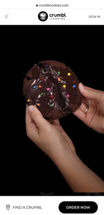

Crumbl Cookie
crumblcookie.com Crumbl Cookie's website is a prime example of visual hierarchy. The get the user's attention with a big image of one of their delicous cookies, or at least is looks delicious. They make the user desiring to try one of their cookies. You next see their logo on top of the screen and the "order" button below.